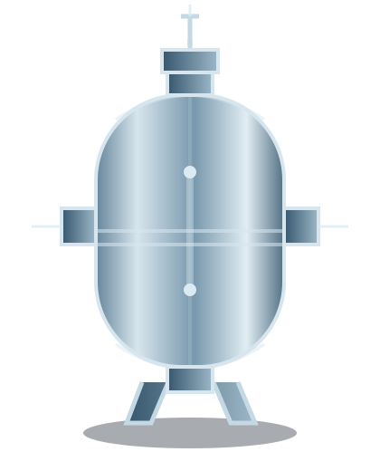

MECHASSET · PRESSURE VESSEL
PV Workspace Dashboard
MECHASSET · ENGINEERING DATA
Pressure Vessel Asset Register
Manage Pressure Vessel documents, extract Previous UT and Last UT readings, review equipment data and prepare the PV asset register for Excel export.
Every extracted value must remain traceable to its source document and page. Previous UT and Last UT are separate document inputs.
Open Equipment Management
PV WORKFLOW
Processing stages
Documents Extraction, Previous UT, Last UT, Mapping & Review and PV Asset Register are available. Excel export is available.
01 · DOCUMENTSDocuments Extraction
Upload Previous Report, Datasheet, COI and supporting documents for an equipment.
02 · PREVIOUS UTExtract Previous UTExtract prior thickness readings as historical comparison data.
03 · LAST UTExtract Last UTExtract the latest UT readings from a separately uploaded report.
04 · VALIDATIONMapping & ReviewMap fields, edit extracted values and review source references.
05 · REGISTERPV Asset RegisterConsolidate equipment identity and thickness history by Equipment ID.
06 · EXPORTExport ExcelExport PV equipment, supporting documents, Previous UT and Last UT into a multi-sheet workbook.